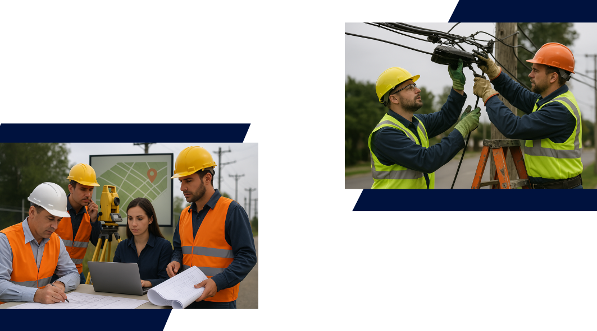

<!DOCTYPE html>
<html lang="es">
<body>
    <script src="scripts.js"></script>
</body>
</html>

<!DOCTYPE html>
<html lang="es">
<head>
    <meta charset="UTF-8">
    <meta name="viewport" content="width=device-width, initial-scale=1.0">
    <title>RediX Ingeniería</title>
    <style>
        body {
    background-color: #d9d9d9;
    background-image: url('images/fondo.png'); /* ← Aquí se usa fondo.png */
    background-size: cover;
    background-position: center;
    font-family: Arial, sans-serif;
}
    
        /* Estilo para el logo */
        .logo-container {
            text-align: center;
            margin-top: 20px;
        }
    
        .logo-container img {
            width: 200px; /* Ajusta el tamaño del logo */
            height: auto;
            display: block;
            margin: 0 auto;
        }
    
        /* Estilo para la barra de navegación */
        .footer-bar {
            background-color: #041038;
            padding: 10px 0;
            text-align: center;
            margin-top: 30px; /* Agregado margen superior para separar del logo */
        }
    
        .footer-bar ul {
            list-style-type: none;
            margin: 0;
            padding: 0;
            display: flex;
            justify-content: center;
        }
    
        .footer-bar ul li {
            margin: 0 15px;
        }
    
        .footer-bar ul li a {
            color: white;
            text-decoration: none;
            font-size: 16px;
            transition: color 0.3s;
        }
    
        .footer-bar ul li a:hover {
            color: #f0a500; /* Cambio de color al pasar el mouse */
        }
    
        /* Estilos para las secciones */
        section {
            padding: 40px;
            margin-top: 30px;
        }
    </style>    
</head>
<body>

    <!-- Logo -->
    <div class="logo-container">
        
    </div>

    <!-- Barra de navegación -->
    <div class="footer-bar">
        <ul>
            <li><a href="#quienes-somos">Quiénes Somos</a></li>
            <li><a href="#mision-vision">Misión y Visión</a></li>
            <li><a href="#objetivos">Objetivos</a></li>
            <li><a href="#oferta-comercial">Oferta Comercial</a></li>
            <li><a href="#contactanos">Contáctanos</a></li>
        </ul>
    </div>
    <!-- Sección "QUIENES SOMOS" -->
<section id="quienes-somos" style="margin-top: 40px; padding: 20px;">
    <h2 style="text-align: center; color: #01123e; font-size: 36px;">QUIENES SOMOS</h2>
    <p style="text-align: justify; color: black; margin-bottom: 0;">
        En REDIX Ingeniería, somos una empresa comprometida con el desarrollo e implementación de soluciones integrales en el campo de las telecomunicaciones y la ingeniería civil. Fundada en 2025, nacemos con el propósito de conectar al mundo a través de infraestructura de alta calidad, tecnología de punta y un equipo humano altamente capacitado.
    </p>
    
<!-- Sección "MISIÓN y VISIÓN" -->
<section id="mision-vision" style="margin-top: 10px; padding: 20px;">
    <!-- Título conjunto para MISIÓN y VISIÓN -->
    <h2 style="text-align: center; color: #01123e; font-size: 36px;">MISIÓN Y VISIÓN</h2>

    <!-- Descripción de MISIÓN y su definición -->
    <div style="margin-bottom: 20px;">
        <p style="text-align: justify; color: black; margin-bottom: 0;">
            <strong style="font-size: 24px; color: #01123e; text-transform: capitalize;">Misión:</strong> Brindar soluciones eficientes, innovadoras y sostenibles en telecomunicaciones e infraestructura, garantizando calidad, cumplimiento y confianza en cada uno de nuestros proyectos, contribuyendo al desarrollo tecnológico y social de nuestros clientes y comunidades.
        </p>
    </div>

    <!-- Descripción de VISIÓN y su definición -->
    <div style="margin-bottom: 20px;">
        <p style="text-align: justify; color: black; margin-bottom: 0;">
            <strong style="font-size: 24px; color: #01123e; text-transform: capitalize;">Visión:</strong> Ser una empresa líder y referente a nivel nacional en el diseño, construcción e implementación de redes y proyectos de ingeniería en telecomunicaciones, reconocida por su excelencia operativa, compromiso con la calidad y enfoque en la innovación tecnológica.
        </p>
    </div>

    <!-- Imagen debajo de MISIÓN y VISIÓN -->
    
<!-- Sección "Objetivos" -->
<section id="objetivos" style="margin-top: 10px; padding: 20px;">
    <!-- Título para Objetivos -->
    <h2 style="text-align: center; color: #01123e; font-size: 36px;">OBJETIVOS</h2>

    <!-- Descripción de Objetivos como lista -->
    <div style="margin-bottom: 20px;">
        <ul style="text-align: justify; color: black; list-style-type: none; padding-left: 0;">
            <li style="font-size: 18px; color: black; position: relative; padding-left: 20px; margin-bottom: 15px;">
                <span style="position: absolute; left: 0; top: 0; font-size: 24px;">•</span>
                Diseñar e implementar redes de telecomunicaciones eficientes, seguras y escalables para clientes públicos y privados.
            </li>
            <li style="font-size: 18px; color: black; position: relative; padding-left: 20px; margin-bottom: 15px;">
                <span style="position: absolute; left: 0; top: 0; font-size: 24px;">•</span>
                Ejecutar obras civiles con altos estándares de calidad, cumplimiento de normativas y compromiso ambiental.
            </li>
            <li style="font-size: 18px; color: black; position: relative; padding-left: 20px; margin-bottom: 15px;">
                <span style="position: absolute; left: 0; top: 0; font-size: 24px;">•</span>
                Ofrecer soluciones de ingeniería personalizadas que integran tecnología de vanguardia y criterios de sostenibilidad.
            </li>
            <li style="font-size: 18px; color: black; position: relative; padding-left: 20px; margin-bottom: 15px;">
                <span style="position: absolute; left: 0; top: 0; font-size: 24px;">•</span>
                Consolidar relaciones de largo plazo con nuestros clientes a través del cumplimiento, responsabilidad y excelencia.
            </li>
            <li style="font-size: 18px; color: black; position: relative; padding-left: 20px; margin-bottom: 15px;">
                <span style="position: absolute; left: 0; top: 0; font-size: 24px;">•</span>
                Fomentar el desarrollo profesional de nuestro equipo humano y la cultura de mejora continua.
            </li>
        </ul>
    </div>

    <!-- Imagen debajo de Objetivos -->
    
</section>

<!-- Sección "Oferta Comercial" -->
<section id="oferta_comercial" style="margin-top: 10px; padding: 20px;">
    <!-- Título centrado -->
    <h2 style="text-align: center; color: #01123e; font-size: 36px;">OFERTA COMERCIAL</h2>

    <!-- Contenedor con Flexbox para las definiciones y la imagen -->
    <div style="display: flex; justify-content: space-between; align-items: flex-start; flex-wrap: wrap;">
        <!-- Descripción de Oferta Comercial como lista -->
        <div style="flex: 1; margin-right: 20px;">
            <ul style="text-align: justify; color: black; list-style-type: none; padding-left: 0;">
                <li style="font-size: 18px; color: black; position: relative; padding-left: 20px; margin-bottom: 15px;">
                    <span style="position: absolute; left: 0; top: 0; font-size: 24px;">•</span>
                    <strong>Área de Ingeniería:</strong><br>
                    - Diseño de proyectos de planta externa.<br>
                    - Levantamiento y digitalización de red.<br>
                    - Gestión y autorización de licencias de intervención y ocupación de espacio público.<br>
                    - Liquidación y As-Built de proyectos.<br>
                    - Supervisión de operación y seguridad para planta externa.
                </li>
                <li style="font-size: 18px; color: black; position: relative; padding-left: 20px; margin-bottom: 15px;">
                    <span style="position: absolute; left: 0; top: 0; font-size: 24px;">•</span>
                    <strong>Área de Proyectos:</strong><br>
                    - Sistemas de redes GPON y FTTH.<br>
                    - Construcción de redes ópticas barrio abiertos y edificios.<br>
                    - Instalación de Postes, banco de ductos, Perforación neumática y dirigida.<br>
                    - Instalación de redes canalizadas a cielo abierto de distribución y acceso.<br>
                    - Interconexiones de redes LAN/WAN.<br>
                    - Certificación de redes ópticas.<br>
                    - Soluciones end-to-end.
                </li>
            </ul>
        </div>

        <!-- Imagen ubicada a la derecha, ajustada un poco más abajo y más grande -->
        <div style="flex-shrink: 0; margin-left: 20px; margin-top: 50px;"> <!-- Ajuste de margin-top para no afectar el interlineado -->
             <!-- Tamaño ajustado -->
        </div>
    </div>

    <!-- Continuación de las definiciones -->
    <div style="margin-top: 20px;">
        <ul style="text-align: justify; color: black; list-style-type: none; padding-left: 0;">
            <li style="font-size: 18px; color: black; position: relative; padding-left: 20px; margin-bottom: 15px;">
                <span style="position: absolute; left: 0; top: 0; font-size: 24px;">•</span>
                <strong>Área de Implementación:</strong><br>
                - Equipamiento para Empalmería y fusión óptica.<br>
                - Instrumentación para medición óptica.<br>
                - Sistemas de cable de fibra óptica.<br>
                - Hardware para redes GPON Y FTTX.
            </li>
            <li style="font-size: 18px; color: black; position: relative; padding-left: 20px; margin-bottom: 15px;">
                <span style="position: absolute; left: 0; top: 0; font-size: 24px;">•</span>
                <strong>Área de Mantenimiento:</strong><br>
                - Mantenimiento preventivo.<br>
                - Mantenimiento correctivo.<br>
                - Mantenimiento 24 x 7.
            </li>
        </ul>
    </div>
</section>


        
                
                

